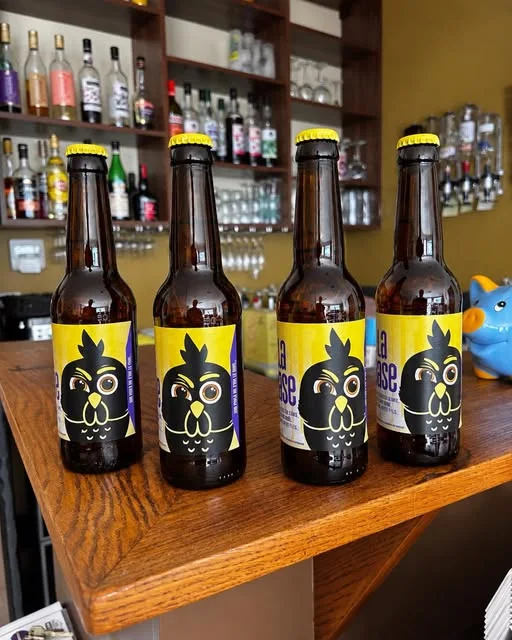
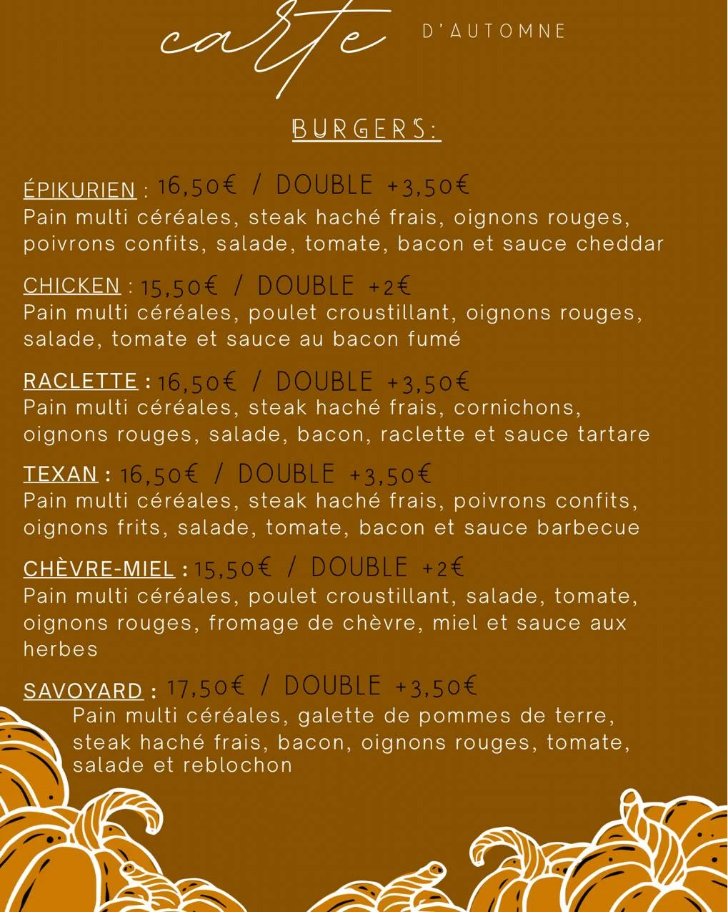
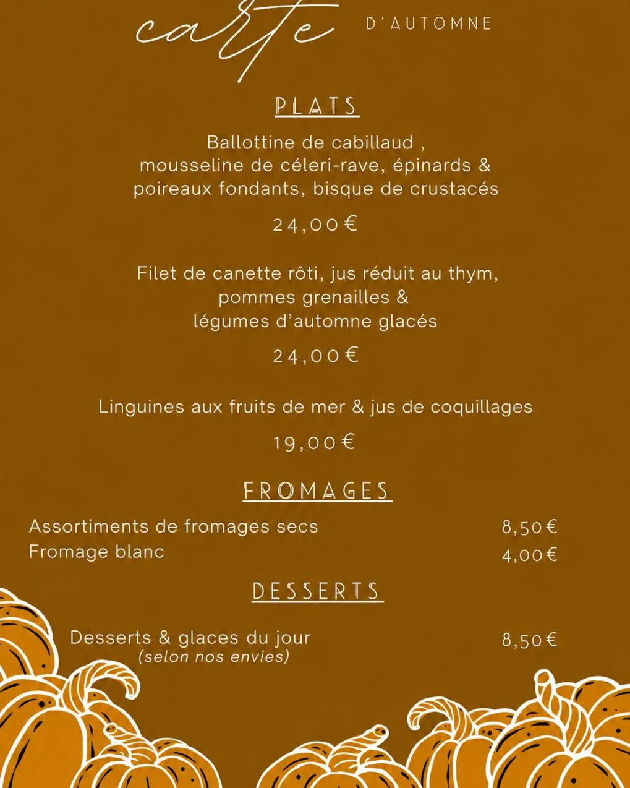
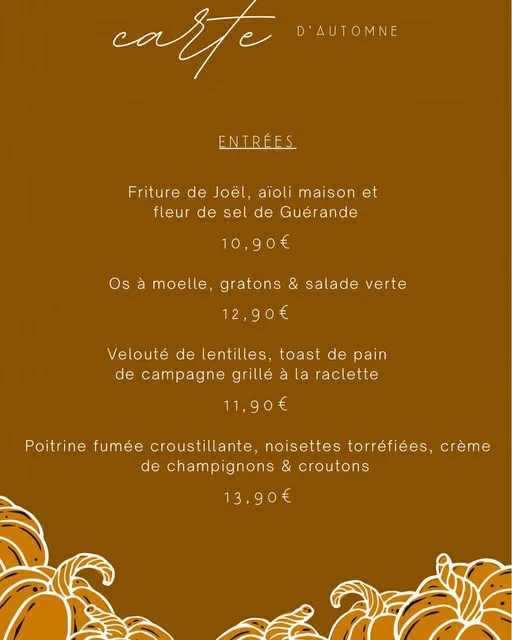
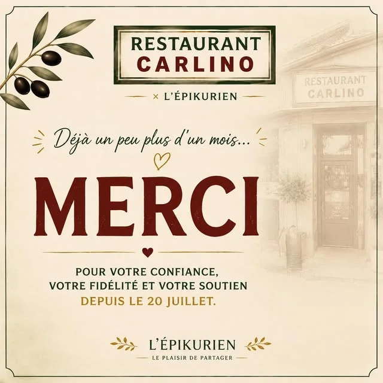
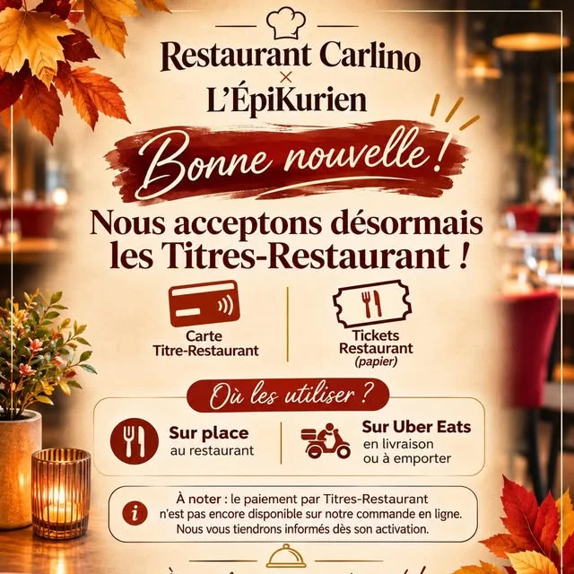
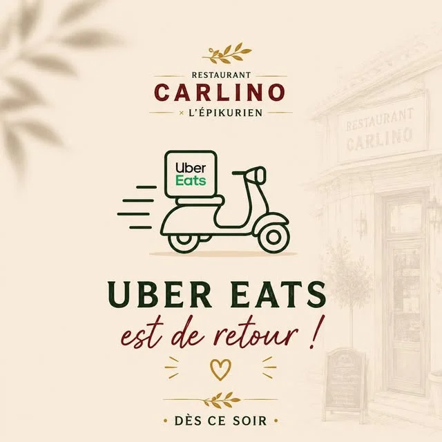
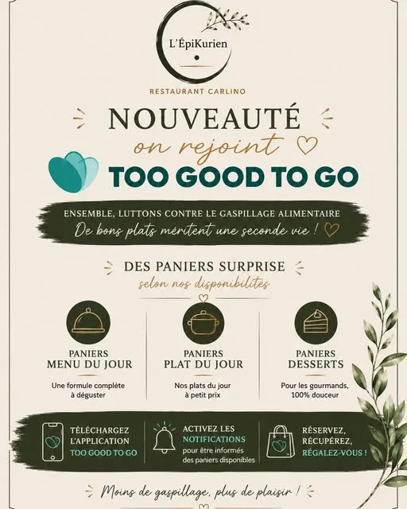
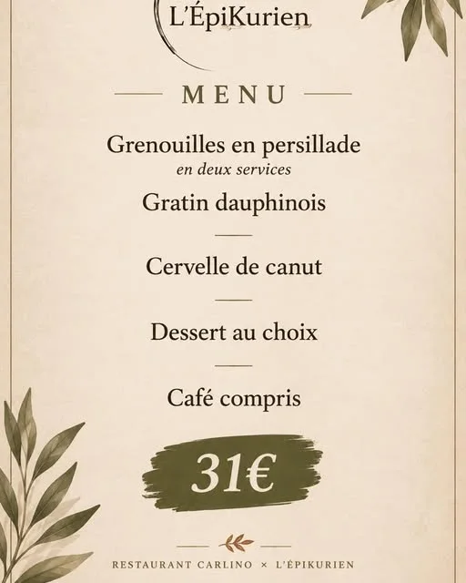

Bienvenue au Restaurant Carlino by L’ÉpiKurien : une ambiance chaleureuse et conviviale, une cuisine généreuse, préparée avec passion.

Le midi
Gourmand, rapide
Pour vos pauses déjeuner, une offre gourmande et rapide, sans compromis sur la qualité : le menu du jour élaboré avec des produits de saison, la suggestion du jour selon l’inspiration du chef, nos bowls frais et équilibrés, nos burgers préparés à la commande.

Le soir
Prendre le temps
Les jeudi, vendredi et samedi soir, une carte plus élaborée, imaginée pour prendre le temps de savourer. Une cuisine traditionnelle, généreuse et raffinée, avec des produits de qualité.

À la maison
Chez vous aussi
Click & Collect : commandez en ligne, passez récupérer.
Livraison via Uber Eats.
Too Good To Go : des paniers anti-gaspi.
Titres-restaurant acceptés sur place.
Terrasse, coin enfants, animaux acceptés.
Nos nouvelles
La vie du restaurant
NouvellesLa salleNouvellesLa devanture

CarteLes entrées d’automne

NouvellesMerci pour votre confianceCarteLes plats d’automne

NouvellesLes titres-restaurant acceptésCarteLes burgersNouvellesRecommandé sur Restaurant Guru 2026CarteLes bowls

NouvellesUber Eats est de retourCarteLe menu à 28 €

NouvellesLe restaurant rejoint Too Good To Go

CarteLe menu grenouillesNouvellesLa salle, côté rueNouvellesAu bar